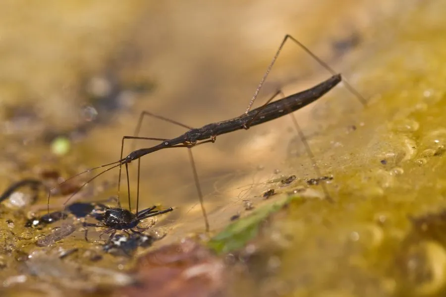

昆虫 · 动物界
尺蝽 Hydrometra annamana

身体细长如针、在水面缓慢行走的水生蝽，靠中后足支撑水面、前足捕食，常见于池塘和稻田的岸边水面上。
- 分类
- 门节肢动物门纲昆虫纲目半翅目科尺蝽科属尺蝽属
- 栖息环境
- 池塘、沟渠、稻田和沼泽的岸边，常停在水面或水草上
- 地理分布
- 中国南方及东南亚的静水水体
- 保护级别
- 暂无评估
物种志
尺蝽成虫体长约 8–12 mm，身体极度细长，呈褐色，头部向前延伸成针状，腹部末端也有细长的呼吸管。足细长，中足和后足着生位置靠后，使它停在水面时像一把撑开的长柄勺。
尺蝽分布于中国南方以及东南亚的静水水体，常见于池塘、沟渠、稻田和沼泽的岸边，多停在水面或水生植物的茎叶上。它依靠水的表面张力在水面行走，中足和后足把体重分散在几个支点上，前足则用来捕捉落在水面上的小型昆虫。发现猎物后，它用刺吸式口器刺入猎物体内吸食。尺蝽行动缓慢，遇到惊扰会迅速滑行到对岸或潜入水中。它对水质污染敏感，是湿地环境监测中常用的指示类群。
形态与习性
- 食性捕食落水的小型昆虫和浮游动物
- 体长8–12 mm
- 运动靠水的表面张力在水面缓慢滑行
- 捕食前足捕捉猎物，口针刺入吸食
- 栖息静水岸边和水生植物茎叶上
- 环境指示对水质污染敏感，可用于湿地监测
趣味知识
- 尺蝽的身体细得像一根针，停在水面时几乎和草茎分不清。
- 它能在水面行走，是因为中后足把体重分散在几个支点上。
- 尺蝽行动很慢，但受惊时能贴着水面迅速滑走。